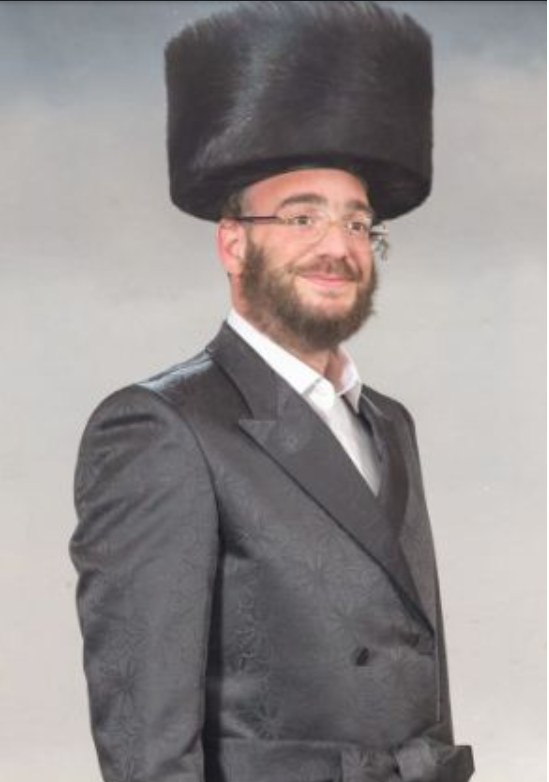

Meir Wiener Story
Meir Weiner, founded Yedidim in 2006. It has since become one of the most prominent volunteer organizations in Israel.
Weiner recently collapsed, and was hospitalized at Shaare Zedek Medical Center in serious condition. On Saturday 30th of December 2023, he passed away.
He was a man of kindness, deeds, and action, and who founded the Yedidim & was active in the Chaverim organizations.
Arrived with the first rescuers in the Be'eri Kibbutz maasacre on the 7th of October 2023, he collapsed with a broken heart. Too many atrocities! Witnessing a burned baby in Hoven, table covered with the Sinhat torah festival meal and nappes where terrosists from Hamas have eaten and murdered the families. No words, but a broken heart.
Hospitalized at Shaare Zedek Medical Center, he survived for three months. Dying after multiple heart attacks. How a broken heart can survive such horrors?
Yedidim
In his youth, Weiner studied at the Karlin boys' school and later at the Karlin Yeshiva. After his marriage, he moved to 
Modi'in Illit, where he earned a living running the "Shehakol" store in Brachfeld.
When he began seeing civilians stranded on the roads with a flat tire, or trapped outside their home without a key, he founded the Yedidim organization, through which many volunteers provide service 24 hours a day.
In 2023 alone, Yedidim reported that its 65,000 volunteers rescued 1,842 children locked in cars, 249 animals trapped in cars and 10,000 drivers who had battery issues, flat tires or had locked the key in their cars.
Chaverim
Chaverim {Hebrew: >חברים, literally, "companions"}, also spelled Chaveirim, is an umbrella name for Orthodox Jewish volunteer organizations with locations all over the world; they provide roadside assistance and other non-medical emergency help at home or on the road.
All services are free.
The organizations are supported by local donations.Chaverim
References & Bibliography
- Jerusalem Post article published the 06JAN2024.
- Vnnews article published the 07JAN2024.
- Matzav article published the 06JAN2024.
- Yedidim contact page
- Israel National News article published the 06JAN2024.
- LinkedIn Post from Arielle Benadi